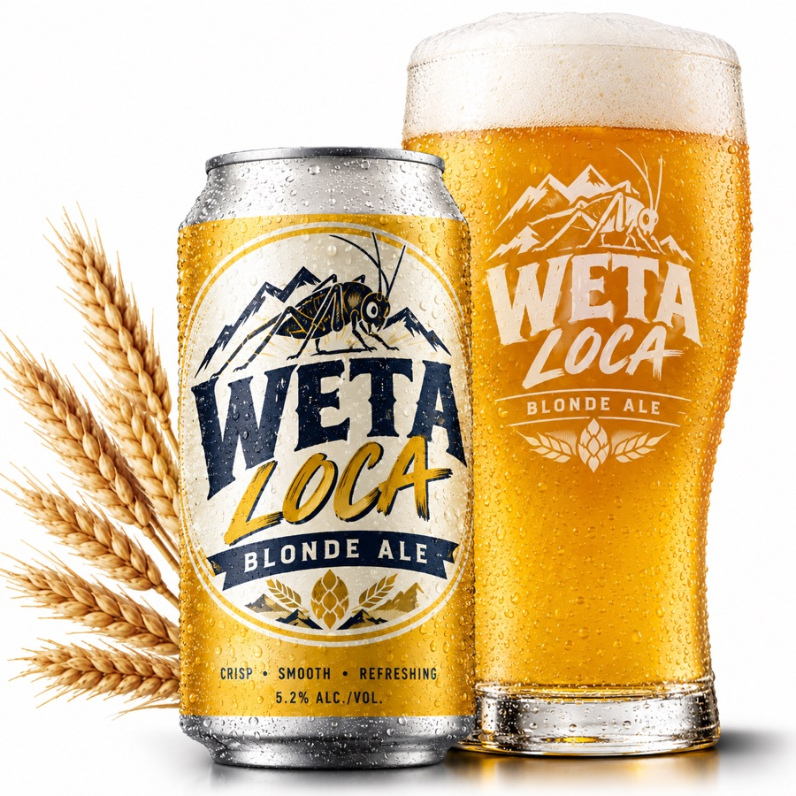
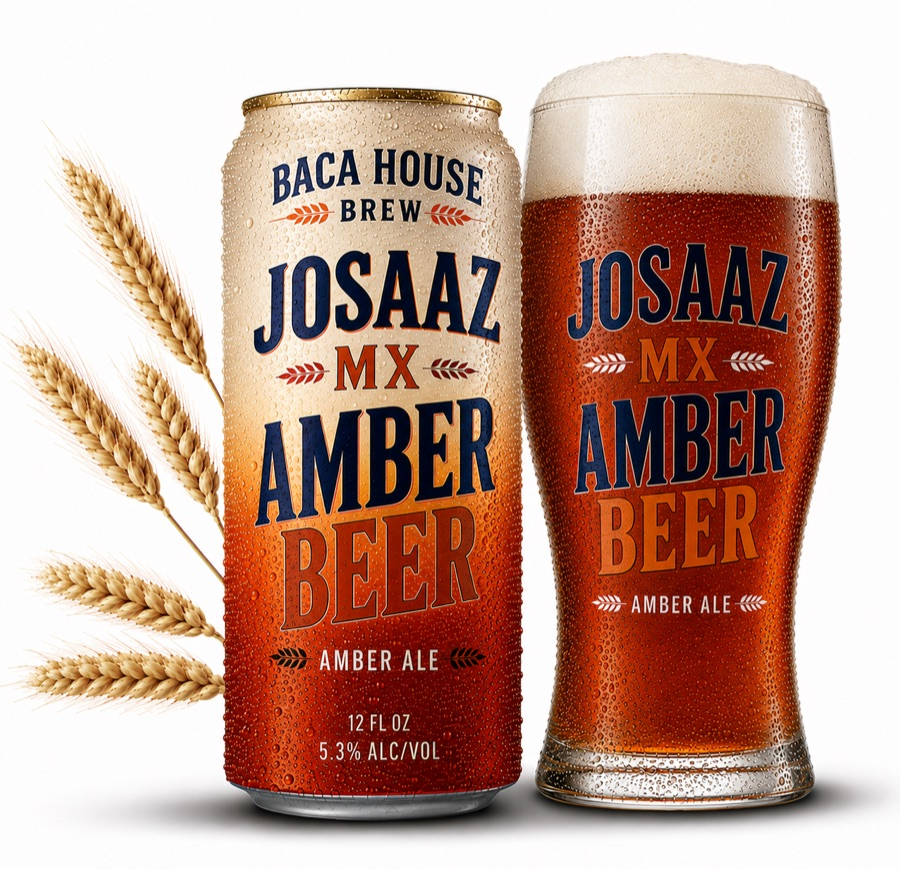
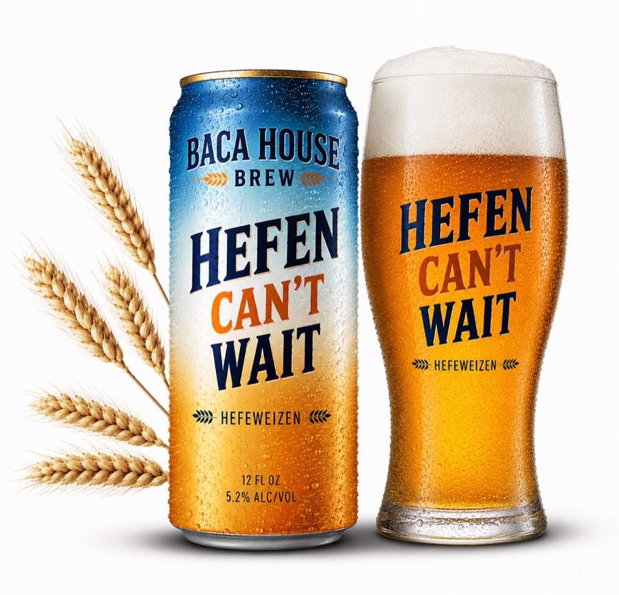
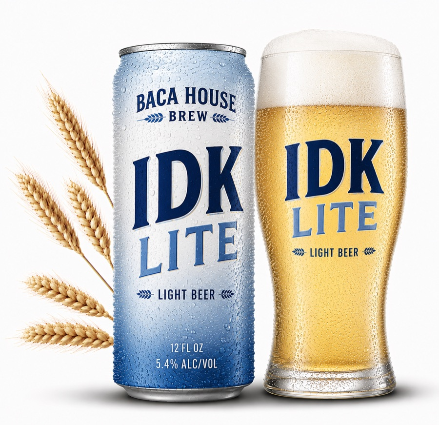

Weta Loca
Crisp, smooth and refreshing. A golden blonde with a soft malt backbone and a clean, dry finish. Good after a hot day in the Rio Grande valley.
- Crisp
- Smooth
- Refreshing
Brewed in Socorro, New Mexico
Craft beer poured inside one of Socorro's territorial-era adobes, the Juan José Baca House, built around 1870. Have a pint, try a pizza, and hear a bit of the town's history.

Welcome to the House
We named the website after the town and the brewery after the house it's in. Here's what you'll find inside.
Four Baca House beers on tap: a blonde, an amber, a hefeweizen and a light beer.
Wine by the glass or bottle, plus three guest hard ciders from Albuquerque's Sandia Hard Cider.
Hot pizza, including our green chile New Mexican, plus wings, fish & fries and other bar snacks.
On Tap Now
Brewed by Baca House. Ask your bartender for a flight of all four.

Crisp, smooth and refreshing. A golden blonde with a soft malt backbone and a clean, dry finish. Good after a hot day in the Rio Grande valley.
A Mexican-style amber with toasted caramel malt, a touch of bready sweetness and a smooth finish. It goes well with the green chile pizza.

Hazy and golden, brewed with plenty of wheat. Banana and clove from the yeast up front, with a soft, fluffy body. Worth the wait.

The answer when somebody says “I don't know, something light.” Pale, ice-cold and easy-drinking, with a crisp, clean finish.
“In 1884, a nineteen-year-old clerk from Socorro walked out of Juan José Baca's store and into New Mexico legend.”Read the History
Not a Beer Drinker?
There's something for everyone at the table.
Grab a Bite
Pizza is our main event. The rest is classic pub food that goes well with a pint.
Pepperoni and roasted New Mexico green chile on melted mozzarella and our red sauce. It's spicy, smoky and very much from around here.
$18
Our Story Started in 1870
The brewery is named after the house, and the house has quite a few stories.
Arthur Lazar photographed the portal of the Juan José Baca House in 1974 for his book Of Earth and Timbers Made: New Mexico Architecture. The photo is in the Palace of the Governors Photo Archives (HP.2013.32.35). See the 1974 photograph →
The Juan José Baca House was built around 1870. It was the home of a prominent merchant and political figure in territorial New Mexico. Juan José Baca, born in 1843, became Socorro's second mayor and served in 1883.
The State of New Mexico now lists the adobe as a Registered Cultural Property, Site No. 153, and a historical marker stands outside it on Abeyta Avenue.
In 1884, Baca's mercantile hired a young local named Elfego Baca. Not long after, he became one of the best-known figures of the American West.
The Clerk Who Became a Legend
Elfego Baca was born in Socorro in 1865. When he was a baby, his family moved to Topeka, Kansas. In 1872 a plague outbreak killed his mother, his sister and his older brother. He later came back to New Mexico, where he worked on cattle ranches and hauled meat by wagon near Albuquerque. In 1884 he was clerking at Juan José Baca's mercantile here in Socorro, earning “$20 a month plus room and board.”
That fall he rode to San Francisco Plaza, known as Frisco, in western Socorro County. There he ended up trapped in a small picket-and-mud cabin, surrounded by about fifty heavily armed cattlemen. The cabin's sunken floor helped him survive, along with his sharp shooting. He held out until a county deputy arrived. He was later tried for murder twice and acquitted both times, and he became a folk hero to New Mexico's Hispanic community.
Elfego Baca went on to serve as deputy sheriff, county clerk, school superintendent, sheriff, district attorney of Socorro County, and mayor of Socorro. In 1958, Walt Disney made a television miniseries about him, The Nine Lives of Elfego Baca.
Juan José Baca is born. He grows up to be a merchant and political figure in territorial New Mexico.
The Juan José Baca House goes up in Socorro, built of adobe with a timbered portal.
Juan José Baca serves as Socorro's second mayor.
Elfego Baca clerks at Baca's mercantile, then survives the Frisco standoff that fall.
Disney airs The Nine Lives of Elfego Baca.
Arthur Lazar photographs the house's portal for Of Earth and Timbers Made.
Baca House Brewery opens its doors, and Socorro gets a place to drink a pint in a building with this much history.
Sources: Juan José Baca House historical marker (HMDB) · City of Socorro: Elfego Baca · Palace of the Governors Photo Archives
Come On In
Juan José Baca House
115 Abeyta Ave
Socorro, NM 87801
Mon – Thu 3pm – 10pm
Fri – Sat 11am – 11pm
Sun 11am – 8pm